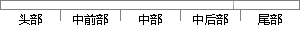

另外，时差频差与其他参数的联合定位算法还有待总结，当时差（或者频差）测量精度很差时，仅利用频差（或者时差）与角度以及其他参数进行联合定位的算法以及相关的误差分析还需要进一步研究。
片段位置图

相似结果|
相似片段 1：差与其他参数的联合定位算法有待总结。当时差（或频差）测量不精时，仅利用频差（或时差）与角度或其他参数进行联合定位的算法以及相关的误差分析还需要进一步研究。 （3）对于无人机航迹优化问题，本文使用的是单步优化，对于多步优化甚至是全局优化实现的可能性还需要进一步研究。当无人机进行多目标定位时，如何规划航迹平衡多个目标的定位精度需求，也值得深入探讨
|
※ 片段修改建议 ※
近似词参考：- 另外：别的 此外
- 联合：结合 团结
- 还有：另有
- 当时：那时 其时
- 或者：或 大概
- 测量：丈量
- 利用：操纵 哄骗 使用 行使 应用
- 或者：或 大概
- 以及：和
- 进行：举行
- 联合：结合 团结
- 以及：和
- 相关：相干
- 误差：偏差
- 分析：阐发 阐明 剖析
- 研究：钻研
系统自动生成语句：别的，时差频差与其他参数的结合定位算法另有待总结，那时差（或频差）丈量精度很差时，仅操纵频差（或时差）与角度和其他参数举行结合定位的算法和相干的偏差阐发还需要进一步钻研。
注：本片段修改建议为系统自动生成，仅供参考。